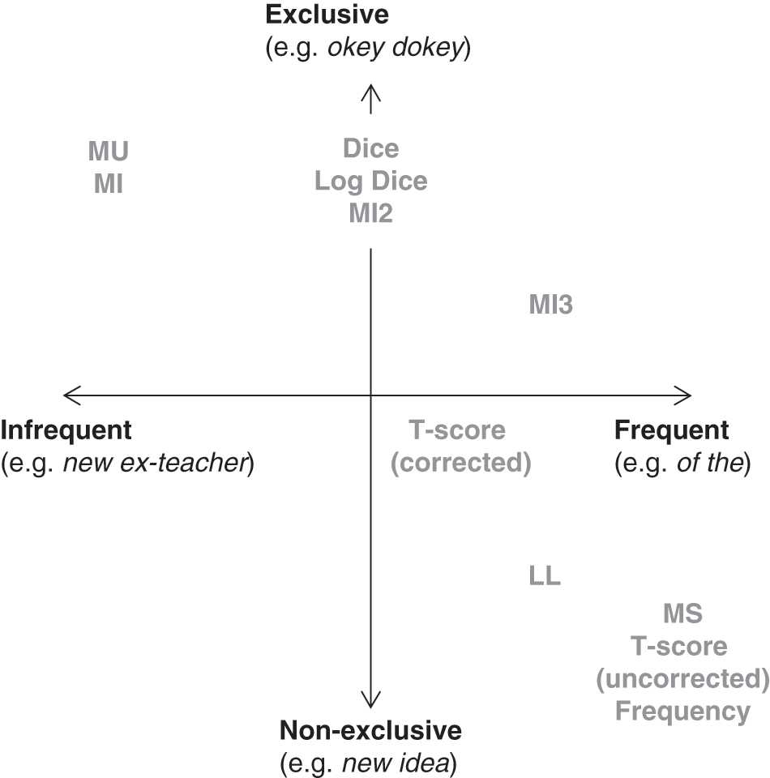
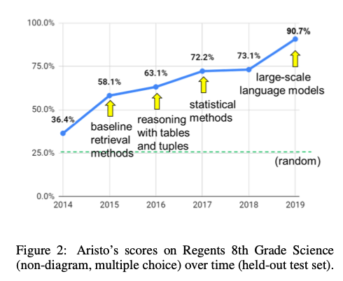

![]()
| token | col_freq | total_freq | MI_1 |
|---|---|---|---|
Collocations
Introduction to association measures
Fall 2024
Collocations & Association Measures
Collocations fundamentals
- Using COCA, we can quickly replicate an experiment first conducted by Stubbs (1995) in which he looked at the nouns that collocate with cause.
Collocations fundamentals
Question
What pattern (or patterns) do you recognize?
Collocations fundamentals
Question
What statistical problems do you see with using simple frequencies as a measure?
Collocations fundamentals
Collocations fundamentals
Collocations fundamentals
Collocations fundamentals
Collocations fundamentals
Question
What factors affect the likelihood of “cause” and “effect” being together in the same group?
Collocations fundamentals
A window or span.
| Pre-node | Node | Post-node |
|---|---|---|
| Does chocolate | cause | acne? After many studies, the answer is … ‘complicated’ |
| Shortage of sailors a | cause | for concern for Royal Canadian Navy |
| Did wine | cause | a full-scale revolution in Armenia? |
| Motorcycle explosion likely | cause | of Milton motel fire, manager reports |
| Heavy rainfall, power outages | cause | school districts to close Friday - |
| Bales of hay | cause | traffic backup along I-55, truck fire |
Collocations fundamentals
A window or span.
| Pre-node | Node | Post-node |
|---|---|---|
| Does chocolate | cause | acne? After many studies, the answer is … ‘complicated’ |
| Shortage of sailors a | cause | for concern for Royal Canadian Navy |
| Did wine | cause | a full-scale revolution in Armenia? |
| Motorcycle explosion likely | cause | of Milton motel fire, manager reports |
| Heavy rainfall, power outages | cause | school districts to close Friday - |
| Bales of hay | cause | traffic backup along I-55, truck fire |
Collocations fundamentals
A window or span.
| Pre-node | Node | Post-node |
|---|---|---|
| Does chocolate | cause | acne? After many studies, the answer is … ‘complicated’ |
| Shortage of sailors a | cause | for concern for Royal Canadian Navy |
| Did wine | cause | a full-scale revolution in Armenia? |
| Motorcycle explosion likely | cause | of Milton motel fire, manager reports |
| Heavy rainfall, power outages | cause | school districts to close Friday - |
| Bales of hay | cause | traffic backup along I-55, truck fire |
Collocations fundamentals
A window or span.
| Pre-node | Node | Post-node |
|---|---|---|
| Does chocolate | cause | acne? After many studies, the answer is … ‘complicated’ |
| Shortage of sailors a | cause | for concern for Royal Canadian Navy |
| Did wine | cause | a full-scale revolution in Armenia? |
| Motorcycle explosion likely | cause | of Milton motel fire, manager reports |
| Heavy rainfall, power outages | cause | school districts to close Friday - |
| Bales of hay | cause | traffic backup along I-55, truck fire |
Association measures
- Pointwise mutual information (PMI) (Church and Hanks 1990). See Brezina, chapter 3.
The formula for calculating MI is as follows:
\[ PMI = log_{2} \left( \frac{O_{11}}{E_{11}} \right) \]
Where O11 and E11 are the observed (i.e., collocate in the span divided by the total number of words in the corpus) and expected frequencies of the node word within a given window. The expected frequency is given by:
\[ E_{11} = \frac{R_{1} \times C_{1}}{N} \]
- N is the number of words in the corpus
- R1 is the frequency of the node in the whole corpus
- C1 is the frequency of the collocate in the whole corpus
- The accepted cutoff for a meaningful association is MI > 3
Association measures
- Pointwise mutual information (PMI) (Church and Hanks 1990). See Brezina, chapter 3.

Association measures
- There are several ways of handling this:
- Filter using a minimum frequency.
- Use one of the PMIk family of statistics (Daille 1994).
- Use NPMI, which normalizes values between 1 and -1 (Bouma 2009).
\[ \begin{aligned} PMI{^k} = log_{2} \left( \frac{O_{11}{^2}}{E_{11}} \right) = PMI - (1 - k)~\times~log_{2} \left( O_{11} \right) \\ \text{where}~2 \ge k \le 3 \end{aligned} \]
\[ NPMI = \frac{PMI}{-log_{2}(O_{11})} \]
Association measures
- COCA allows for PMI calculations using the RELEVANCE option.
Association measures
Association measures
Question
What differences do you notice from the earlier result using frequencies?
Association measures
Note
When measuring collocations, you must have a data structure of sequential tokens. In other words, something like a document-feature matrix won’t work.
- In R, this could be a list or vector.
- In Python, this could be a list or an array.
- Alternatively, this could be a polars dataframe, which runs in Rust, but has bindings for Python and R.
Lab: Collocations
- Begin the lab.
Note
We’re using the preprocess_text() that we introduced in an earlier lab.
Association measures
- As we would expect, infrequent tokens have the highest association measures.
Association measures
- By filtering with thresholds for frequency (5) and PMI (5) the results apprear more interpretable.
| token | col_freq | total_freq | MI_1 |
|---|---|---|---|
| owe | 5 | 21 | 9.010102 |
| raise | 10 | 79 | 8.098639 |
| extra | 6 | 64 | 7.665454 |
| spend | 10 | 111 | 7.608004 |
| insurance | 5 | 64 | 7.402420 |
| spent | 9 | 122 | 7.319679 |
| amount | 6 | 109 | 6.897270 |
| making | 14 | 343 | 6.465782 |
| cost | 6 | 154 | 6.398668 |
| buy | 5 | 150 | 6.173601 |
Association measures
- By filtering with thresholds for frequency (5) and PMI (5) the results apprear more interpretable.
Question
How do you determine where to set these kinds of thresholds?
A collocational network
- From the tables, we can generate a collocational network that resembles what Brezina et al. (2015) propose.
ggraph(net, weight = link_weight, layout = "stress") +
geom_edge_link(color = "gray80", alpha = .75) +
geom_node_point(aes(alpha = node_weight, size = 3, color = n_intersects)) +
geom_node_text(aes(label = label), repel = T, size = 3) +
scale_alpha(range = c(0.2, 0.9)) +
theme_graph() +
theme(legend.position="none")A collocational network
- From the tables, we can generate a collocational network that resembles what Brezina et al. (2015) propose.
An example of an application
- A research group used PMI to create a model that answers standardized test questions (Clark et al. 2020).
An example of an application
- A research group used PMI to create a model that answers standardized test questions (Clark et al. 2020).
A collocational network
- Their model performed well (Clark et al. 2020).

Works cited
Bouma, Gerlof. 2009. “Normalized (Pointwise) Mutual Information in Collocation Extraction.” Proceedings of GSCL 30: 31–40. https://svn.spraakdata.gu.se/repos/gerlof/pub/www/Docs/npmi-pfd.pdf.
Brezina, Vaclav. 2018. Statistics in Corpus Linguistics: A Practical Guide. Cambridge University Press.
Brezina, Vaclav, Tony McEnery, and Stephen Wattam. 2015. “Collocations in Context: A New Perspective on Collocation Networks.” International Journal of Corpus Linguistics 20 (2): 139–73.
Church, Kenneth, and Patrick Hanks. 1990. “Word Association Norms, Mutual Information, and Lexicography.” Computational Linguistics 16 (1): 22–29. https://aclanthology.org/J90-1003.pdf.
Clark, Peter, Oren Etzioni, Tushar Khot, Daniel Khashabi, Bhavana Mishra, Kyle Richardson, Ashish Sabharwal, et al. 2020. “From ‘f’to ‘a’on the NY Regents Science Exams: An Overview of the Aristo Project.” Ai Magazine 41 (4): 39–53.
Daille, Béatrice. 1994. “Approche Mixte Pour l’extraction Automatique de Terminologie: Statistiques Lexicales Et Filtres Linguistiques.” PhD thesis, Ph. D. thesis, Université Paris 7.
Firth, John Rupert. 1957. Papers in Linguistics, 1934-1951. Book. Oxford: Oxford University Press. https://books.google.com/books?id=ilzingEACAAJ.
Stubbs, Michael. 1995. “Collocations and Semantic Profiles: On the Cause of the Trouble with Quantitative Studies.” Functions of Language 2 (1): 23–55.